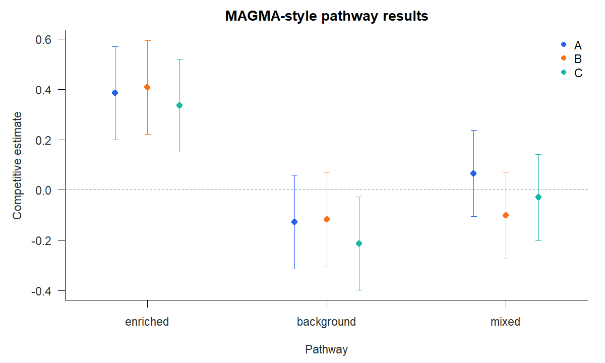

Gene and pathway analysis with gsea
gsea analyses gene-level evidence and named collections of genes. It re-exports glma::vegas() for the preceding marker-to-gene step, then offers over-representation, preranked, competitive, MAGMA-style and Bayesian pathway methods. pops() separately ranks genes using their features. This tutorial continues the shared 20K/50K analysis. Run the overview’s loading block and the glma VEGAS step first to define gene_sets and gene_results.
From markers to genes
VEGAS has already converted aligned marker statistics and reference LD into one gene table per trait. gsea_input() checks that all traits have available p-values and the same genes in the same order, then renames the gene identifier for pathway analysis.
library(gsea)
input <- gsea_input(gene_results)
gene_stat <- input$stat
names(gene_stat)
head(gene_stat$A[c("gene", "score", "p_value",
"marker_count", "sample_size")])VEGAS sets contain marker names. The pathway sets below contain gene names. The simulated enriched set includes genes drawn from the first 80 regions; background and mixed provide comparisons.
pathway_sets <- list(
enriched = names(gene_sets)[1:160],
background = names(gene_sets)[401:560],
mixed = names(gene_sets)[seq(1, 999, by = 5)]
)Fit the MAGMA-style competitive model
The public MAGMA route consumes calibrated gene p-values and gene metadata such as marker count, effective parameters, GWAS sample size and minor-allele count. The VEGAS result carries those fields from the preceding stage. Gene dependence must be declared; the saved example deliberately uses an independent working gene covariance.
pathways <- gsea(gene_stat, pathway_sets, method = "magma",
sampling = list(gene_covariance = "independent"))
pathways$pathways
pathways$preparationThe table reports a competitive estimate, standard error and p-value for each trait and pathway. It shows evidence for the planted enriched group in all three traits. These p-values belong to the specified working model and this one simulated dataset.
| Trait | Pathway | Estimate | Standard error | P value |
|---|---|---|---|---|
| A | enriched | 0.385 | 0.0947 | 2.567e-05 |
| A | background | -0.127 | 0.0954 | 0.908 |
| A | mixed | 0.0656 | 0.0875 | 0.227 |
| B | enriched | 0.408 | 0.0953 | 1.040e-05 |
| B | background | -0.117 | 0.0961 | 0.888 |
| B | mixed | -0.102 | 0.0881 | 0.877 |
| C | enriched | 0.336 | 0.0944 | 1.950e-04 |
| C | background | -0.213 | 0.0947 | 0.988 |
| C | mixed | -0.0299 | 0.087 | 0.635 |

summary(pathways) also returns preparation and diagnostics. The bounded MAGMA route implements its documented gene-property corrections; it does not construct gene covariance from marker LD. Supply labelled covariance blocks when gene dependence matters and can be estimated.
Rank genes from features with PoPS
PoPS-style ranking is a different question: which genes receive high feature-based priority scores? Features are numeric columns in a gene-by- feature matrix. A chromosome-held-out model scores each gene using a fit that excluded its chromosome from the training response.
gene_names <- names(gene_sets)
region_index <- rep(seq_len(500), each = 2L)
set.seed(20260932)
features <- matrix(rnorm(length(gene_names) * 100L),
nrow = length(gene_names),
dimnames = list(gene_names, sprintf("feature%03d", 1:100)))
features[, 1] <- as.numeric(gene_names %in% pathway_sets$enriched)
pops_stat <- data.frame(
gene = gene_names,
chromosome = as.character(ceiling(region_index / 25L)),
score = gene_stat$A$score
)
ranking <- pops(pops_stat, features,
sampling = list(gene_covariance = "independent"),
control_features = "feature001")
head(ranking$predictions[order(ranking$predictions$genome_rank), ])
ranking$foldsThe first ten genes in the saved ranking are:
| Gene | Chromosome | Score | Genome rank |
|---|---|---|---|
| gene0083 | 2 | 1.56 | 1 |
| gene0092 | 2 | 1.24 | 2 |
| gene0075 | 2 | 1.24 | 3 |
| gene0056 | 2 | 1.22 | 4 |
| gene0100 | 2 | 1.22 | 5 |
| gene0066 | 2 | 1.21 | 6 |
| gene0134 | 3 | 1.19 | 7 |
| gene0063 | 2 | 1.18 | 8 |
| gene0062 | 2 | 1.17 | 9 |
| gene0074 | 2 | 1.15 | 10 |
score is a model prediction from features and genome_rank orders those scores. Neither is a p-value, causal probability or automatic top-gene choice for a locus. The fit also retains selected features and fold diagnostics.
Select another pathway question
| Method | Required gene evidence | Main output |
|---|---|---|
ora |
A logical selected flag over the complete gene background. |
Over-representation and fold enrichment. |
preranked |
A finite signed gene score. |
Enrichment score, normalized score and permutations. |
competitive |
A finite gene score and declared gene covariance. |
Joint or separate regression effects for pathways. |
magma |
Gene p-value and required gene metadata. | Corrected competitive pathway statistics. |
bayesc, bayesr |
Gene score, explicit priors and gene covariance. |
Posterior pathway effects and inclusion probabilities. |
For a simple selected-gene or ranked-gene analysis on the same evidence:
selected <- transform(gene_stat$A, selected = p_value < 0.05)
ora <- gsea(selected, pathway_sets, method = "ora",
control = list(adjustment = "BH"))
ranked <- gsea(gene_stat$A, pathway_sets, method = "preranked",
control = list(replicates = 999L, seed = 2401L))The selected threshold, permutation count and adjustment are analysis choices. These alternative fits were not used to create the displayed MAGMA table. For joint Bayesian traits, the gsea guide shows the required effect covariance prior and fixed residual trait covariance. It also describes the package’s deterministic marker-level gsea_preranked() route.